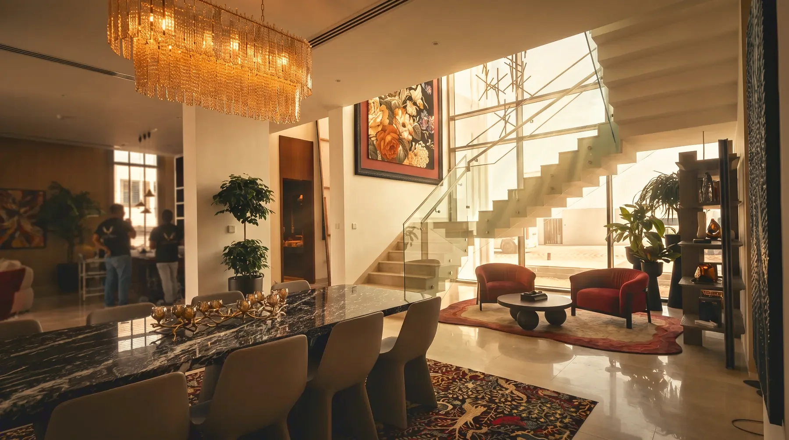
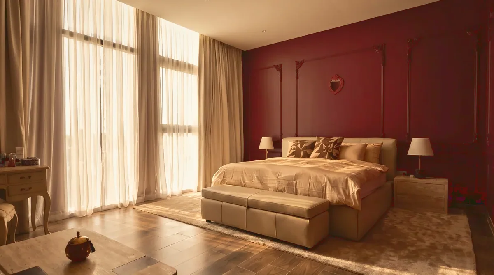
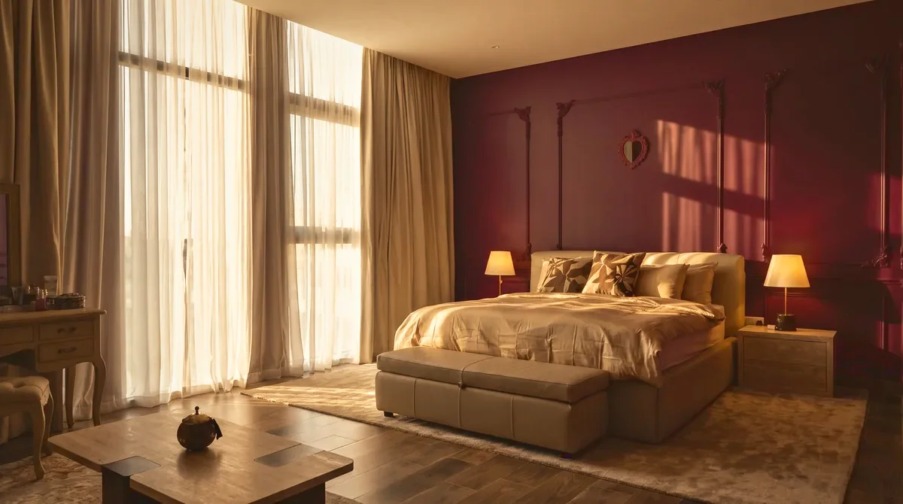

International
USA Residence
Miami, United StatesFamily residence2022
The project
A family home built around one luminous, double-height room. From the street at night the house declares its section: the stair, the chandelier and the dining room held in a single warm frame. Deep burgundy panelling, brass fittings and carved onyx give the rooms their formality; the nursery and family lounge keep the house honest about what it is.
- Project
- USA Residence
- Location
- Miami, United States
- Year
- 2022
- Typology
- Family residence
- Status
- Completed
- Scope
- Interior architectureFF&EJoineryArt curation
- Categories
- Residential / Full turnkeyInternational

The spaces
A walk through USA Residence

The film
USA Residence
Before & after
The principal bedroom
Drag the line — or use the arrow keys — to move between before and after.


Start a project
Your project, next.
Tell us what you’re planning, where it is and what you want to achieve.
Start a project